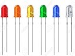

Séance 1: observer et décrire la structure d'un objet
Mise en situation : On a une Del, on veut la programmer…
Problématique :

PARTIE 1: LED et plaque d’essai
1- Dessinez la LED mise à disposition et indiquez la patte qui représente le positif et la patte du négatif.
2- Regardez la Led par-dessus, que constatez vous ? A quelle patte correspond ce méplat ?
3- Décrivez la plaque d’essai. Dessinez une plaque d’essai avec 14 points en colonnes et 4 points en lignes.
4- Ouvrez le document « plaque d essai vu de dessous.jpg ».
5- Passez en bleu les liaisons des lignes et en rouge les liaisons des colonnes sur votre dessin.
**PARTIE 2:**Carte Arduino
1- Qu’est-ce qu’une carte Arduino ? Que peut-on faire avec une carte arduino?
2- Qu’est-ce qui va passer dans la carte électronique ?
3- Explorer la carte Arduino sur le lien suivant« arduino, la carte électronique.pdf ».
4- Repérez et indiquez sur votre document le +5V, les 3 GND et les entrées/sorties numériques.
5- Il y a combien d’entrées et de sorties numériques ?
Mise en commun : Branchement de la LED
On va brancher la LED à la carte arduino à l’aide de fils et d’une résistance électrique (qui va adapter le courant pour protéger la LED).
1- Branchez un fil de la sortie 5 de la carte arduino à une ligne quelconque de la plaque d’essai.
2- Branchez une patte de la résistance sur la ligne précédente et l’autre patte sur autre une ligne quelconque.
3- Reliez la grande patte (+) de la DEL sur la ligne de la résistance précédente et la petite patte (-) sur une autre ligne quelconque.
4- Branchez un fil qui sort de la petite patte (-) de la DEL et reliez une colonne (–) d’alimentation.
5- Branchez un fil qui sort de la colonne (-) d’alimentation au GND de la carte arduino.
6- Faire contrôler par le professeur.
Synthèse :
Sur un système, chaque élément a un rôle précis, on va utiliser de l’électricité, si le branchement n’est pas bon, il peut y avoir un court-circuit. La plaque d’essai va servir à brancher les différents composants électroniques pour faire des tests. La carte arduino va gérer le programme pour le fonctionnement des composants sur la plaque d’essai. Sur l’Arduino, on aura l’alimentation et la gestion des entrées et des sorties. Avec un programme fait sur ordinateur, on pourra contrôler chaque entrée et sortie (allumer ou éteindre).
🧠 Teste tes connaissances
Réponds aux questions puis clique sur « Vérifier » — la correction s'affiche aussitôt.
1. Sur la LED (DEL), à quoi correspond le méplat que l'on voit en la regardant par-dessus ?
2. Quel est le rôle de la résistance électrique placée sur le montage de la LED ?
3. À quoi sert la plaque d'essai ?
4. Que gère la carte Arduino dans le système ?